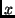

Next: Diagnostic Functions
Up: Primitives
Previous: Type Manipulation Functions
Contents
Tool Invocation Function
t_binding
_run_tool(
t_text platform,
t_list command,
t_text stdin = "",
t_text stdout_treatment = "report",
t_text stderr_treatment = "report",
t_text status_treatment = "report_nocache",
t_text signal_treatment = "report_nocache",
t_int fp_content = -2,
t_text wd = ".WD",
t_bool existing_writable = FALSE)
_run_tool is the mechanism by which external programs like compilers
and linkers are executed from a Vesta SDL program. It provides
functionality that is fairly platform-independent. The following
description, however, is somewhat Unix-specific (for example, in its
description of exit codes and signals).
The platform argument specifies the platform on which the tool
is to be executed. _run_tool selects a specific machine for the given
platform. The legal values for platform and the mechanism by
which a machine of the appropriate platform is chosen are
implementation dependent.
The tool to be executed is specified by the command
argument. This argument is a t_list of t_text values. The first member
of the list is the name of the tool (interpretation of the name is
discussed below); the remaining members of the list are the arguments
passed to the tool as its command line. The tool is executed on the
specified platform in an environment with the following
characteristics:
- The file system is encapsulated so that absolute paths (i.e., those
beginning with a Delim) are interpreted relative to ./root,
where `.' is the implicit final parameter to _run_tool. Non-absolute
paths are interpreted relative to ./root/$wd, where wd is a parameter to _run_tool. The interpretation of filenames is
discussed in more detail below.
- The environment variables are taken from ./envVars, where
`.' is the implicit final parameter to _run_tool.
- The content of standard input is the value of the stdin
_run_tool parameter.
- Treatment of standard output and standard error is specified by the
stdout_treatment and stderr_treatment parameters.
These parameters may be one of the t_text values
"ignore", "report", "report_nocache",
"value", or "report_value".
If the treatment is "ignore", any bytes written to
the corresponding output stream (stdout or stderr) are discarded. If
the treatment is "report", the corresponding output is made visible
to the user. If the treatment is "report_nocache", the
corresponding output is made visible to the user and, if it is not
empty, the evaluator does not cache the result of the _run_tool call.
If the treatment is "value", the output stream is converted to a
Vesta value of type t_text and returned as part of the _run_tool result, as described below. If the treatment is
"report_value", the output stream is both made visible to the
user and also returned as part of the result.
- The status_treatment and signal_treatment arguments may
take on the t_text value "report" or
"report_nocache". Regardless of their values, the
code and signal fields of the result value
will be set as described below. If the value of status_treatment is
"report_nocache", this _run_tool call will not be cached
if the result code is nonzero; similarly, if
signal_treatment is "report_nocache", the _run_tool call will not be cached if the result signal is nonzero.
Additionally, in our implementation, a runtool call that is not
cached because of its return code or signal is considered a runtime
error and halts the evaluation with an error message, unless
the -k (``keep going'') flag is given on the evaluator command line.
- The fp_content argument controls how fingerprints are assigned
to any derived files created by the tool execution, including derived
files created for stdout or stderr when the value of the stdout_treatment or stderr_treatment parameter is ``value''.
A value of -1 causes the fingerprints of all such
derived files to be computed deterministically from their contents. A
non-negative fp_content value of  causes only those files
less than bytes in length to have their fingerprints computed from
the file contents; an arbitrary unique fingerprint is chosen for files
at least bytes in length. Hence, a value of 0 causes all derived
files to be assigned arbitrary fingerprints. Setting fp_content
to -2 selects a site-dependent default value (set by the
[Evaluator]/FpContent configuration variable, in our implementation).
The boolean values TRUE and FALSE are accepted as synonyms
for -1 and 0, respectively.
The cost of fingerprinting a file's contents is non-trivial
(approximately 1 second per megabyte on the prototype implementation),
but doing so allows for cache hits in cases where two evaluations
depend on a value that is identical, but was computed in two different
ways.
- The existing_writable argument controls whether the tool is
permitted to write to files that already exist in its encapsulated
file system when it is started. If the argument is TRUE, such
files may be opened for writing and written to; if it is FALSE,
they may not. For technical reasons in the NFS-based repository
implementation, tools will get much better file system performance
when existing_writable is FALSE. It should be set to
TRUE only for tools that require it.
The _run_tool primitive returns a binding that contains
the results of the command execution. This binding has type:
type run_tool_result = binding [
code : int,
signal : int,
stdout_written : bool,
stderr_written : bool,
stdout : text,
stderr : text,
root : binding
]
If r is of type run_tool_result, then:
- r/code is an integer value that characterizes how
the command terminated (i.e., the exit status of the Unix process).
- r/signal is an integer value identifying the Unix
signal that terminated the process, or 0 if the process exited
voluntarily.
- r/stdout_written and
r/stderr_written indicate whether data was
written to the stdout and stderr streams, respectively.
- r/stdout is defined if and only if the stdout_treatment
_run_tool parameter is "value" or "report_value", in which
case it contains the bytes written to stdout.
- r/stderr is defined if and only if the stderr_treatment
_run_tool parameter is "value" or "report_value", in which
case it contains the bytes written to stderr.
- r/root is a binding containing all files created
by the command that are extant upon exit. See the description
under ``File System Encapsulation'' below for details.
Two fine points relating to the results of _run_tool:
- If the tool cannot be invoked--for example, because of errors in the
parameters to _run_tool--the evaluator always prints a diagnostic and
halts with a runtime error. However, errors that occur during the
execution of the tool are reported in a tool-specific fashion, as
discussed under "status_treatment" and
"signal_treatment" above.
- If "report_nocache" is specified as the treatment for an
output stream (stdout or stderr) or the exit or signal status, the
evaluator will not make a cache entry for the _run_tool call if any
output is produced on the corresponding output stream or if the exit
or signal status is nonzero, respectively. In addition, none of the
ancestor functions of the failing _run_tool call in the call graph are
cached either. Since no cache entries are made, a subsequent
re-interpretation of the model will produce the same output (on stdout
or stderr). This can be useful for reproducing error messages from a
compiler or other external tool that are displayed through the Vesta
user interface.
<
- When the command process (or any subprocess it creates) executes a
Unix system call that includes a file path as a parameter, the file
path is translated into a reference into the `.' binding that is the
last parameter to _run_tool.
- The path is interpreted relative to ./root if it is absolute
(i.e., if it begins with ``/''), and relative to ./root/$wd
otherwise, where $wd is the value of the wd parameter to
_run_tool. Each component of the path--except possibly the final
one--must name a Vesta binding. The interpretation of the final
component of the path depends on the semantics of the system call. If
the system call expects an extant file, the final component must name
a Vesta value of type t_text. If the system call expects an extant
directory, the Vesta value must be of type t_binding. If the system
call expects an unbound name, the name must not be bound by the
binding corresponding to the penultimate path component.
- A file created or modified by the command process (or a subprocess) remains
visible in the name space throughout the remainder of the
process's execution (or until deleted), just as in a regular
file system. This is achieved by modeling file creation, modification, and
deletion as a suitable overlaying of ./root. For example,
if the process creates ``foo.o'' in its working directory, this has
the effect of:
./root/$wd += [ foo.o = <bytes of file> ];
<subsequent execution of the command process>
- File modification is handled in exactly the same way. For example,
if the process opens the existing file ``foo.db'' in its working directory
and writes to it, this has the effect of:
./root/$wd += [ foo.db = <new contents of file> ];
<subsequent execution of the command process>
Note that modification of preexisting files is forbidden if the
existing_writable argument to _run_tool is set to
FALSE (its default value).
- File deletions are modeled similarly, but the files are removed from
the context using the binding difference (-) operator, instead of
added using the binding overlay (+) operator.
- When the command process exits, the accumulated effects
of the file creations and deletions it has performed
are returned as part of the _run_tool result (in
r/root). In this binding, the names of files
deleted by the tool are bound to false. Such names
correspond either to files that existed in ./root before
the tool was invoked, or to files created and subsequently deleted by
the tool.
Thus, if ./root represents the state of the file system
visible to the command process at the time it is launched, then the
state of the file system when it exits can be described as:
./root ++ r/root
So, if the invoker of _run_tool wanted to update ./root
to reflect the changes made by calling _run_tool, the code might
look like this:
r = _run_tool( <suitable parameters> );
new_fs = ./root ++ r/root;
. += [ root = new_fs ];
After the last assignment, names in ./root bound to
false are files that were deleted by the tool. Here is a
recursive function for removing such files:
/**nocache**/
remove_deleted(b: binding): binding
{
res: binding = [];
foreach [ n = v ] in b do
res += if v = false then [] else
if _is_binding(v)
then [ $n = remove_deleted(v) ]
else [ $n = v ];
return res;
};
Next: Diagnostic Functions
Up: Primitives
Previous: Type Manipulation Functions
Contents
Allan Heydon, Roy Levin, Timothy Mann, Yuan Yu